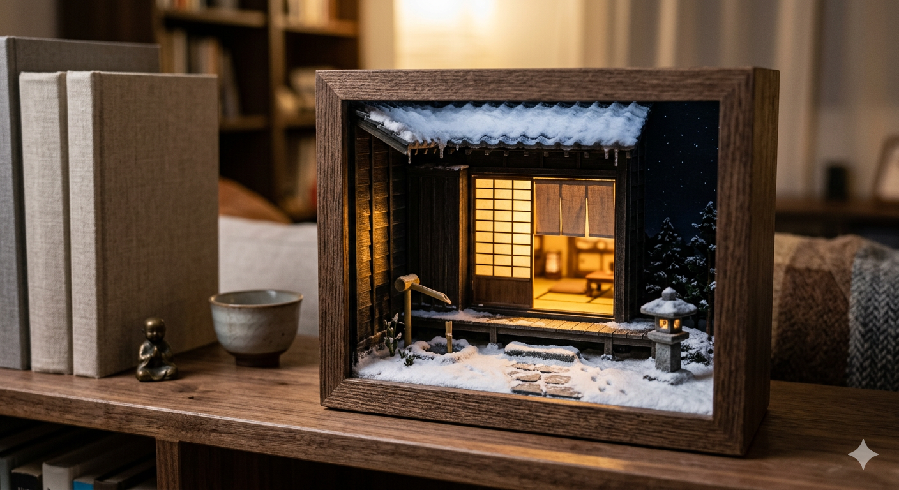

Winter Window Light Scene
Japan Hot Spa
Japan Hot Spa is a premium miniature light scene that captures the quiet beauty of a winter ryokan at night. Its central gesture is the contrast between amber interior glow filtering through shoji screens and the cool, still blue of the snowy exterior.
The deep walnut-toned architectural framing and finely rendered snow textures give the piece the presence of a small poetic theater. Rather than presenting a full building, it focuses on a single intimate corner, turning absence, silence, and shelter into the core experience.
Designed for shelves, side tables, or workspaces, the object becomes especially powerful after dark, when its calm light introduces a restorative mood into the room. It is less a lamp than a framed emotional refuge.
- Material direction: Smoked walnut tone, textured snow detail, illuminated shoji architecture
- Display idea: Light scene object with atmospheric interior depth
- Mood: Winter stillness, refuge, healing warmth